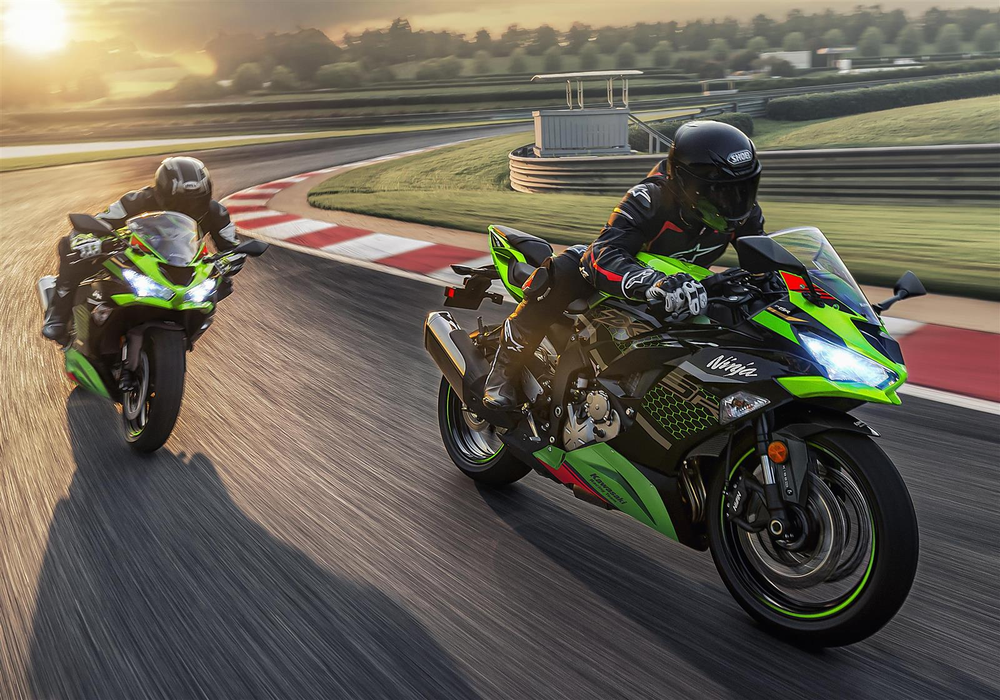

La Kawasaki Z900 2025 es la última evolución de la exitosa naked de 948 cc de la marca japonesa, destacándose por su equilibrio entre rendimiento, tecnología y diseño agresivo. A continuación, te presento un resumen de sus principales características y novedades.

Visítanos para conocer nuestras nuevas instalaciones con pruebas de manejo incluidas.

Promociones especiales en motos deportivas hasta agotar stock.
Modelo insignia con tecnología Supercharged.

Perfecta para viajes largos y rutas sinuosas.

Equilibrio ideal entre ciudad y carretera.
Kawasaki Argentina cuenta con una red oficial de concesionarios distribuidos estratégicamente en las principales ciudades del país.
Kawasaki Argentina, representada por Grupo Iraola/Corven, cuenta con 23 concesionarios oficiales distribuidos en 10 provincias: Buenos Aires, Corrientes, Bariloche (Río Negro), Mar del Plata, Quilmes, Rafaela, Junín, Salta, Tucumán y La Rioja.
Se espera la apertura de 3 nuevos locales durante el año
Buenos Aires (CABA y GBA)
L a V: 9 :00 – 19 :00 - Sábado: 9 :00 – 13 :30
Domingo: cerrado
Los horarios pueden cambiar por feriados o celebraciones locales.
L a V: 9 :00 – 18 :00 - Sábado: 9 :00 – 14 :00
Domingo: cerrado
Teléfono: 011 4257‑4796
L a V: 9 :00 – 17 :00
Estos son algunos de los puntos de venta más emblemáticos:
Quilmes, Buenos Aires, Argentina. Showroom amplio con line‑up completo, taller y atención especializada.
Funes, Santa Fe, Argentina. Gran showroom – 800 m², servicio postventa para ~350 motos/mes. 
La Rioja, La Rioja, Argentina. Nuevo concesionario oficial en capital, línea completa y postventa.
Pilar, Buenos Aires, Argentina. Local oficial en zona norte‑GBA, contacto y taller.
Vicente López, Buenos Aires, Argentina. Sucursal histórica con showroom y servicio técnico.
Showrooms amplios con todos los modelos Kawasaki en exhibición (Z, Ninja, Versys, KLR, etc.)
Talleres técnicos especializados, con atención a más de 20 motos diarias (Quilmes) o hasta 350/mes (Funes)
Accesorios, repuestos y vestimenta originales
Personal capacitado directamente por Kawasaki
Elegí el concesionario más cercano según tu provincia o ciudad.
Contactá por teléfono o WhatsApp (muchos tienen líneas directas) para verificar stock, horarios, y disponibilidad de test de manejo.
Es útil leer reseñas online para evaluar la atención y servicio posventa (en especial en CABA y GBA).
laneá tu compra anticipadamente, ya que para modelos de gama alta o limitados puede haber listas de espera o planes de financiamiento con condiciones específicas.
Kawasaki Ninja 250
“Es una moto que inspira. La compré modelo 2010 con 14 000 millas por USD 3 400… estoy chocho. Es ágil para ciudad, filtra bien, va hasta 120 km/h con comodidad y suena realmente bien. Los repuestos son caros, pero hay muchas piezas genéricas – pastillas, retenes, tornillería – que podés reemplazar pagando un cuarto de precio.”

"Lo que te digo, si la vas a usar por 4 o 5 años vale la pena. Vivo en Argentina, acá Kawasaki no es una entrada, es comprar después de ahorrar. Ninja 400 cuesta lo mismo que 101 meses de mi alquiler en un departamento de lujo. He tenido motos por 10 años, todas de baja cilindrada… voy a venderlas para comprar una kawa. La idea es 50 % autopista, 40 % ciudad caótica y 10 % tierra/grava, unos 32 km diarios en total."
Kawasaki Ninja 300 / Z650
“Kawasaki tiene una calidad excelente. Si para vos valer la pena... la respuesta es sí… pero los costos de operación y mantenimiento son elevadísimos… service caros… seguro y patente idem. La red de repuestos de Kawa es excelente…"

“Anda una delicia no me puedo quejar. La calidad y respaldo técnico sólidos, pero elevados costos de mantenimiento, patentes, seguros y repuestos en Argentina. Para viajar te cubren perfectamente. Hago entre 300 y 700 km semanales… en ruta y tierra no tengo la menor queja. “Lleva un filtro grande… y mano de obra entre 5 y 10 mil [ARS]. Es todo caro… pero vale la pena. Doblar, frenar, acelerar, suspensiones, embrague… es un upgrade a una moto grande. Kawasaki entrega satisfacción al usuario que busca calidad, performance y respaldo técnico.”
Kawasaki Ninja 1000sx
“Este modelo ha sido la moto más divertida tras otros grandes modelos como el FJR o la Concours. Curva de par estable desde 5 000 hasta 10 000 rpm, con más de 120 CV disponibles alto en el tacómetro. Electrónica actualizada (ABS, modos de conducción, control de tracción, TFT), aportan seguridad y usabilidad. Comodidad superior en rutas rápidas, y comportamiento noble en zonas vibrantes o curvas lentas.”

“Lo que mas valoro es su Versatilidad real, una deportiva con confort suficiente para viajes largos, y sin renunciar a agilidad en carretera. Ademas tiene un potencia asequible: motor suave en bajas rpm pero con pegada contundente en tramo medio‑alto y trae Equipamiento completo: TFT, quick‑shifter, modos de manejo, maletas (en versiones SX)… gran valor extra.”